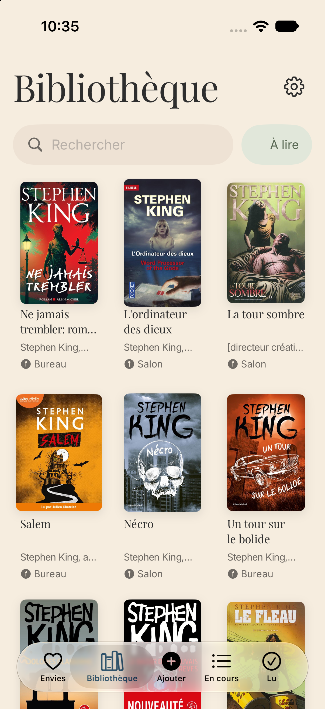
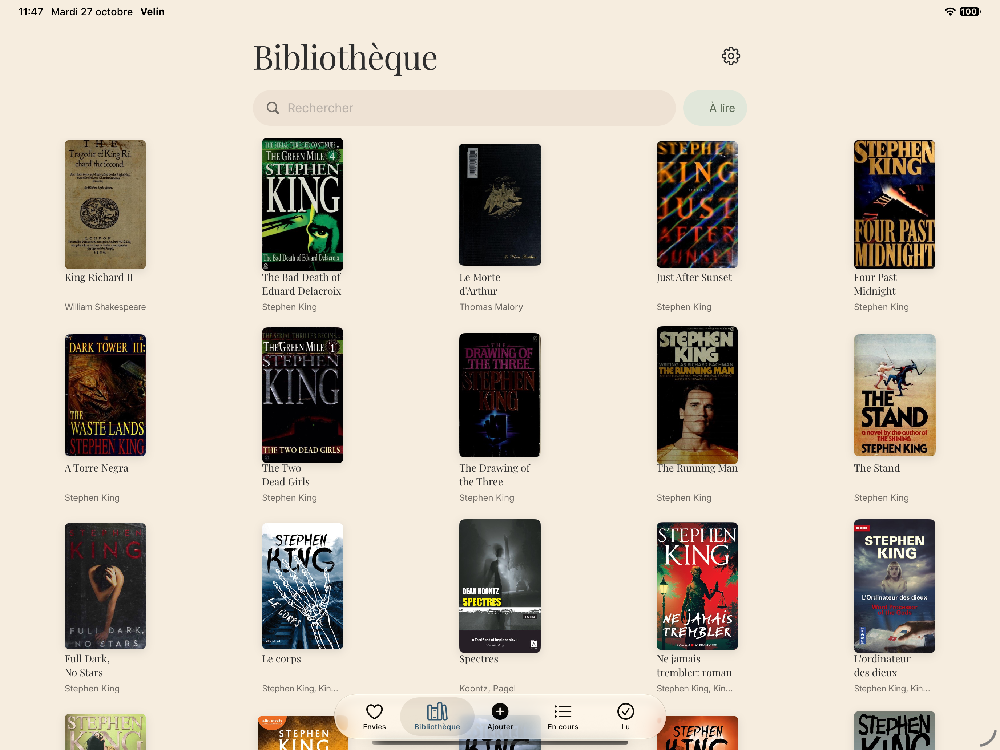
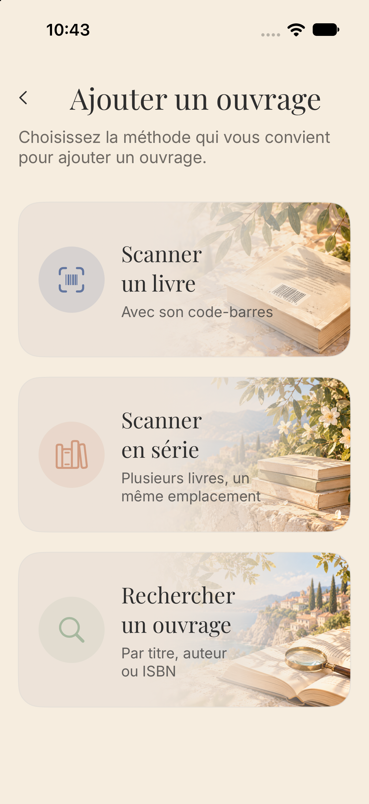
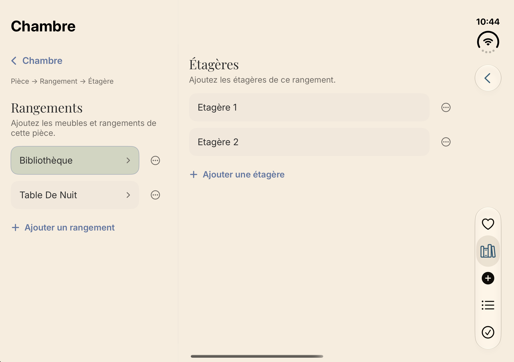

B
Bibliothèque
Regroupez tous les ouvrages que vous possédez, recherchez-les rapidement et retrouvez leur statut, leur note et leur emplacement.
Cataloguez vos livres, suivez vos lectures, retrouvez chaque ouvrage chez vous et gardez votre bibliothèque synchronisée sur tous vos appareils Apple.
Velin vous accompagne au quotidien pour organiser votre collection, vos envies et vos lectures, avec une interface élégante pensée pour l’iPhone, l’iPad et l’iPhone Duo.


Velin rassemble votre collection personnelle dans une interface claire et agréable à parcourir. Ajoutez vos ouvrages, retrouvez leurs informations, suivez votre progression et organisez votre bibliothèque physique.
Regroupez tous les ouvrages que vous possédez, recherchez-les rapidement et retrouvez leur statut, leur note et leur emplacement.
Gardez de côté les ouvrages que vous aimeriez découvrir ou acheter plus tard, séparément de votre collection actuelle.
À lire, En cours, Lu : retrouvez immédiatement vos lectures actives et conservez l’historique des ouvrages terminés.
Velin propose trois méthodes pour enrichir rapidement votre bibliothèque.
Scannez le code-barres ISBN au dos du livre. Velin recherche automatiquement les informations disponibles.
Ajoutez toute une étagère en enchaînant plusieurs scans et affectez les ouvrages au même emplacement.
Recherchez par titre, auteur ou ISBN et vérifiez les informations avant l’enregistrement.

Toutes les éditions ne sont pas référencées de la même façon. Velin peut consulter plusieurs services bibliographiques afin d’améliorer la reconnaissance des ouvrages.
Bibliothèque nationale de France et Sudoc.
Google Books et Open Library.
Scrinis complète la recherche lorsqu’une édition est difficile à retrouver.
Une grande bibliothèque peut vite devenir difficile à organiser. Velin vous permet d’indiquer précisément où se trouve chaque ouvrage.
Exemple : Chambre → Bibliothèque → Étagère 2

Velin adapte son interface à l’espace disponible afin de rester agréable à utiliser sur chaque appareil compatible.
Scannez un ouvrage, recherchez un titre ou retrouvez où se trouve un livre en quelques secondes.
Profitez d’un affichage plus confortable pour parcourir une grande collection et gérer vos emplacements.
Parcourez votre bibliothèque tout en conservant les détails d’un ouvrage visibles à côté lorsque l’espace le permet.
Lorsque vous utilisez iCloud, Velin peut synchroniser automatiquement votre bibliothèque, vos statuts de lecture, vos notes, vos emplacements et votre liste d’envies entre vos appareils Apple connectés au même compte.
Aucun compte Velin supplémentaire n’est nécessaire.
Non. Velin ne nécessite pas de compte spécifique. Si vous utilisez iCloud, vos appareils doivent simplement être connectés à votre compte Apple.
Vous pouvez scanner son code-barres ISBN, utiliser le scan en série ou rechercher l’ouvrage par titre, auteur ou ISBN.
Oui. Si aucune source ne permet d’identifier correctement l’ouvrage, Velin vous permet de compléter les informations nécessaires.
Oui. Lorsque plusieurs couvertures sont disponibles, Velin peut vous permettre de choisir celle qui correspond le mieux à votre édition.
Oui. Les ouvrages peuvent notamment être classés À lire, En cours ou Lu.
Oui. Les ouvrages terminés peuvent recevoir une note.
Oui. La section Envies conserve les ouvrages que vous aimeriez acheter ou lire plus tard.
Oui. Velin organise les emplacements selon trois niveaux : Pièce → Rangement → Étagère.
Oui, lorsque la synchronisation iCloud est disponible et que vos appareils utilisent le même compte Apple.
Oui. L’interface s’adapte à la taille de l’écran et profite des grands formats pris en charge par iOS.
Certaines éditions peuvent être absentes de certains catalogues. Velin utilise plusieurs sources, mais la disponibilité de chaque ouvrage ou couverture ne peut pas être garantie.
Une question, un problème ou une suggestion pour améliorer Velin ? Nous serons heureux de vous aider.
Support : support_velin@icloud.com
Dernière mise à jour : 26 octobre 2026
Votre vie privée est importante. Velin a été conçue pour fonctionner avec le minimum de données nécessaires et sans création de compte utilisateur propre à l’application.
Velin peut stocker des informations telles que les titres, auteurs, ISBN, couvertures, statuts de lecture, notes, dates de lecture, liste d’envies et emplacements de vos ouvrages. Ces informations sont utilisées uniquement pour fournir les fonctionnalités de l’application.
Lorsque la synchronisation iCloud est utilisée, les données de Velin peuvent être stockées et synchronisées via les services iCloud / CloudKit d’Apple associés à votre compte. Velin n’exploite pas ces données à des fins publicitaires. La disponibilité et le fonctionnement d’iCloud dépendent des services Apple et de la configuration de votre appareil.
Velin demande l’accès à la caméra uniquement lorsque vous utilisez une fonctionnalité nécessitant le scan du code-barres ISBN d’un ouvrage. Les images de la caméra sont utilisées pour détecter le code-barres. Velin n’utilise pas la caméra pour vous identifier ou effectuer un suivi.
Lorsque vous scannez ou recherchez un ouvrage, certaines informations nécessaires à la recherche peuvent être transmises à des services bibliographiques tiers, notamment un ISBN, un titre ou un auteur.
L’utilisation de ces services peut être soumise aux politiques de confidentialité et conditions propres à leurs éditeurs respectifs.
Velin n’intègre pas de publicité, n’utilise pas vos données pour créer un profil publicitaire, ne vend pas vos données personnelles et n’effectue pas de suivi publicitaire entre différentes applications ou différents sites.
Si aucune solution d’analytics externe n’est intégrée à Velin, aucune donnée analytique supplémentaire n’est collectée directement par l’application au-delà des mécanismes éventuellement proposés par Apple et configurés par l’utilisateur.
Les données de votre bibliothèque restent sous votre contrôle. Vous pouvez supprimer des ouvrages, des emplacements ou d’autres informations directement depuis l’application lorsque la fonctionnalité correspondante est disponible. La suppression de l’application ou des données iCloud associées peut également entraîner la suppression de ces informations conformément au fonctionnement des services Apple.
Velin n’est pas conçue pour collecter intentionnellement des données personnelles concernant des enfants.
Cette politique de confidentialité peut être mise à jour afin de refléter les évolutions de Velin ou des exigences réglementaires. La date de dernière mise à jour est indiquée en haut de cette section.
Pour toute question relative à Velin ou à cette politique : support_velin@icloud.com
Catalog your books, track your reading, find every book in your home, and keep your library synchronized across your Apple devices.
Velin helps you organize your collection, wishlist and reading activity through an elegant interface designed for iPhone, iPad and iPhone Duo.
Velin brings your personal book collection together in a clear, enjoyable interface. Add books, retrieve their information, track your reading progress and organize your physical library.
Keep all the books you own together and quickly access their reading status, rating and physical location.
Save books you would like to discover or purchase later, separately from the books you already own.
To Read, Reading and Read: instantly find active reads and keep a history of finished books.
Velin gives you several ways to quickly build your library.
Scan the ISBN barcode on the back of the book. Velin automatically searches available sources.
Scan several books in a row and assign them to the same location without repeating the process.
Search by title, author or ISBN and review the available information before saving.
Not every edition is indexed in the same way. Velin may query several bibliographic services to improve book recognition.
Bibliothèque nationale de France and Sudoc.
Google Books and Open Library.
Scrinis can complement searches when an edition is difficult to find elsewhere.
Velin lets you record exactly where each book is stored using a simple hierarchy.
Example: Bedroom → Bookcase → Shelf 2
Velin adapts its interface to the available screen space so that your library stays comfortable to use everywhere.
Scan books, search for titles and find where a book is stored in just a few seconds.
Enjoy a more spacious interface for browsing large collections and managing locations.
Browse your library while keeping the selected book’s details visible alongside it whenever the available space allows.
When iCloud is available, Velin can automatically synchronize your library, reading statuses, ratings, locations and wishlist across Apple devices signed in to the same account.
No additional Velin account is required.
No. Velin does not require a separate user account. If you use iCloud synchronization, your devices simply need to be signed in to your Apple Account.
You can scan its ISBN barcode, use batch scanning, or search by title, author or ISBN.
Yes. If no source can correctly identify your book, Velin lets you complete the required information.
Yes. When several covers are available, Velin may let you choose the one that best matches your edition.
Yes. Books can be organized using statuses such as To Read, Reading and Read.
Yes. Finished books can be rated.
Yes. Wishlist lets you save books you may want to buy or read later.
Yes. Velin organizes locations using Room → Storage → Shelf.
Yes, when iCloud synchronization is available and your devices use the same Apple Account.
Yes. The interface adapts to the available space and larger screen configurations supported by iOS.
Some editions may be missing from certain catalogs. Velin uses several sources, but availability of every book or cover cannot be guaranteed.
Have a question, found an issue or have an idea that could improve Velin? We will be happy to help.
Support: support_velin@icloud.com
Last updated: October 26, 2026
Your privacy matters. Velin is designed to operate with the minimum amount of information required and does not require a dedicated Velin account.
Velin may store information such as titles, authors, ISBNs, covers, reading statuses, ratings, reading dates, wishlist entries and book locations. This information is used solely to provide the application’s features.
When iCloud synchronization is used, Velin data may be stored and synchronized through Apple iCloud / CloudKit services associated with your account. Velin does not use this information for advertising purposes.
Velin requests access to the camera only when you use a feature that requires scanning a book’s ISBN barcode. Camera images are used to detect the barcode. Velin does not use the camera to identify or track you.
When you scan or search for a book, information required for the search may be sent to third-party bibliographic services. Depending on the search, this may include an ISBN, title or author.
Use of these services may be subject to their respective privacy policies and terms.
Velin does not include advertising, does not use your information to create advertising profiles, does not sell personal data and does not perform advertising tracking across apps or websites.
If Velin does not integrate an external analytics service, no additional analytics data is collected directly by the app beyond mechanisms that may be provided by Apple and controlled through the user’s Apple settings.
Your library data remains under your control. You can delete books, locations and other information directly from the app whenever the relevant feature is available. Removing the app or associated iCloud data may also remove this information according to the way Apple services operate.
Velin is not designed to intentionally collect personal information from children.
This privacy policy may be updated to reflect changes to Velin or applicable legal requirements. The latest revision date appears at the top of this section.
For questions regarding Velin or this privacy policy: support_velin@icloud.com